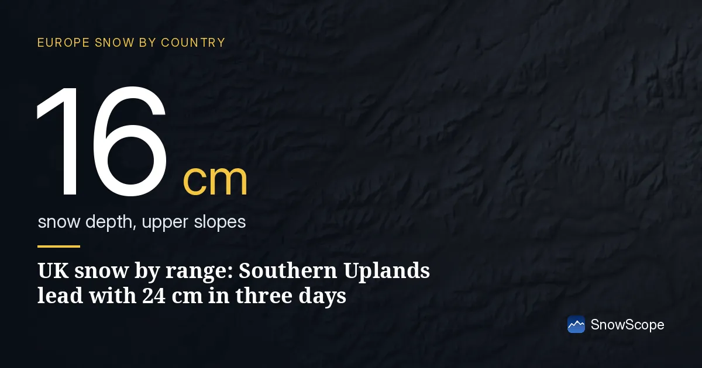
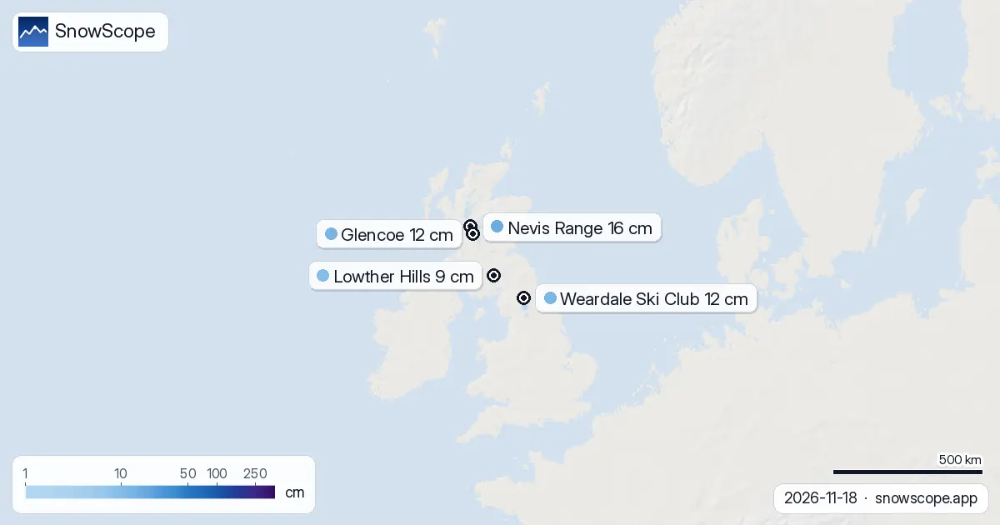
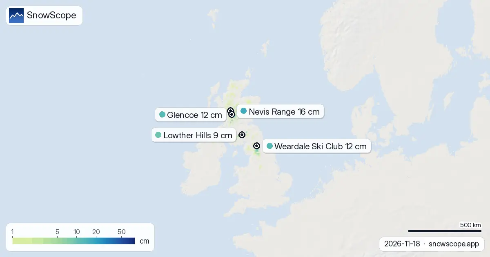
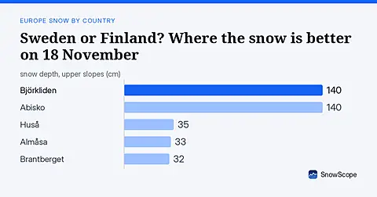

UK snow by range: Southern Uplands lead with 24 cm in three days
Three Scottish and northern English ranges pulled ahead in the past three days. The Southern Uplands gathered 24 cm of new snow, more than twice what fell at Nevis Range, which still holds the deepest measured base at 16 cm.
See the live snow forecast for Nevis Range in the SnowScope appSnow depth, powder alerts and the 3D map, free.
Where the new snow settled
The past 72 hours brought 12 cm to the UK hills on average across our modelled area, but the snow fell in three distinct pockets. The Southern Uplands received the most: 24 cm of fresh accumulation, which fed into a water store now sitting there. Glencoe and the North Pennines tied for second place, each receiving 18 cm. This uneven pattern matters for ski potential and for water storage at high altitude. At lower elevations, melt is already reducing cover: snow-covered ground fell from 5870 km² yesterday to 4300 km² today.
The snow came as cold air moved south, but the system was not deep enough to reach lower hills uniformly. Only 2570 km² of ground received more than 5 cm of new snow in the past 72 hours, leaving most of the UK free of measurable accumulation. The snow line sits at 700 m, so only the highest hills are holding white cover. That white share—just 11 percent of our mapped area—reflects the patchy and limited nature of the event so far.
| Resort | Snow depth | New snow, 72 h | Coming, next days | Top |
|---|---|---|---|---|
| Nevis Range | 16 cm | 5 cm | 0 cm | 1,190 m |
| Weardale Ski Club | 12 cm | 18 cm | 0 cm | 658 m |
| Glencoe | 12 cm | 8 cm | 0 cm | 1,079 m |
| Lowther Hills | 9 cm | 14 cm | 0 cm | 704 m |
| Glenshee | 9 cm | 12 cm | 0 cm | 1,028 m |

Measured depths at the ski areas
Nevis Range remains the deepest site, with 16 cm of water-equivalent snow at the top (1190 m). The past 72 hours brought only 5 cm there, so most of that base came from earlier in November. Weardale Ski Club shows 12 cm depth but received 18 cm in the past three days, suggesting the base was shallow before this storm. The same pattern holds at Lowther Hills: 9 cm depth but 14 cm new snow, and at Glenshee, 9 cm depth from 12 cm fresh. These numbers tell a story of thin early-season snow that is steadily being reinforced.

Above 1000 metres: now snow-covered
An important threshold has been crossed at higher elevations. Between 1000 and 1500 m, we now measure a mean depth of 7 cm and 100 percent cover. This matters because snow at that height melts slowly and feeds rivers into winter. Below 1000 m, cover remains patchy: 500–1000 m has 1 cm average depth and only 34 percent coverage, while ground below 500 m is almost bare (2 percent coverage). The completed cover above 1 km is genuine progress for November, even if the absolute depth is still modest.
The next three days: minimal new snow
The pattern changes from tomorrow. Our model shows no new snow arriving in the next three days across any of the ski areas. Existing snow will likely consolidate and settle under its own weight. By 20 November, the first new band of snow is forecast to reach the UK, bringing a small amount. The 25 November looks more promising: our model peaks at 5 cm for that day, which would be the heaviest single snowfall event of the coming week.
Looking ahead: weak to stronger
The week of 26 November to 2 December is forecast to deliver more than it has so far. Our model predicts a maximum of 27 cm somewhere in that week, which would be substantial by early-winter UK standards. The contrast is sharp: in the week just ending, the peak was 12 cm; in week two, it rises to 27 cm. This shift reflects the approach of a more organised weather pattern. Ireland, by contrast, is tracking to stay dry; snow there is not forecast. Norway, 1000 km north, is already deep in winter with 168 cm at Riksgränsen and 38 cm forecast in the next seven days.
What the numbers mean for water storage
Early-season snow is thin and mobile. The 16 cm at Nevis Range and the 12 cm recorded at Weardale Ski Club and Glencoe represent water stored in the high mountains, but not yet a stable snowpack. Rocks can break through thin cover, and wind can redistribute it in hours. The completed coverage above 1000 m is the first sign that a true mountain snowpack may form. Each centimetre added over the coming weeks will strengthen that resource and slow melt. Watch the 25 November forecast closely: if the model is right, that day could mark a turn from early-season patchy snow to something more reliable.
Tips for skiers
- Check coverage above 1000 m before you go. At lower elevations, snow is thin and gaps to rock are common. Stick to the highest routes and north-facing slopes where melt is slowest.
- The Southern Uplands, Glencoe, and the North Pennines hold the freshest snow. Plan days there if you want consolidated snow from the past 72 hours.
- No new snow is due for the next three days. Your base will settle but not deepen.
- If the 25 November forecast holds, that day could add enough depth to transform early-season conditions. Plan a trip for the week after if you can wait.
- Always check the latest official avalanche bulletin before going off-piste in the Scottish hills. Early-season snow can slide on wet ground beneath.
About these numbers
Resort snow depths are the deepest snow on the resort's upper slopes from the SnowScope snow model (about 1 km, run of 18 November); they are estimates for an area, not a measurement at one point. Station values are measurements on the date shown. Forecasts can change. Always read the official avalanche bulletin before going off-piste.
Cite this report
For research, teaching or the press: the numbers and charts are free to reuse under CC BY 4.0 with this citation.
SnowScope (2026), UK snow by range: Southern Uplands lead with 24 cm in three days, https://snowscope.app/blog/en/2026/11/uk-where-the-snow-fell-18-november-2026.html, accessed 2026-11-18
SnowScope (Atlas Labs). (2026, November 18). UK snow by range: Southern Uplands lead with 24 cm in three days. SnowScope snow reports. https://snowscope.app/blog/en/2026/11/uk-where-the-snow-fell-18-november-2026.html
BibTeX
@misc{snowscope2026ukwherethesnowfell18nove,
author = {{SnowScope (Atlas Labs)}},
title = {UK snow by range: Southern Uplands lead with 24 cm in three days},
year = {2026},
month = nov,
howpublished = {\url{https://snowscope.app/blog/en/2026/11/uk-where-the-snow-fell-18-november-2026.html}},
note = {Published 2026-11-18 13:38 UTC; accessed 2026-11-18}
}· CC BY 4.0 · Methods, data and tools →
Nevis Range: snow and temperature by height, this winter vs last (tools) →
Follow Nevis Range
Free: a message when fresh snow is coming, and the forecast every morning.
More snow reports

Sweden or Finland? Where the snow is better on 18 November. Snow cover, new snow, resorts and the days ahead in Sweden on 18 November.

Norway vs Finland: 89 % white against 55 %. Snow cover, new snow, resorts and the days ahead in Norway on 18 November.

27 of Finland's 67 resorts have snow on 18 November. Upper slopes above 1000 m hold 41 cm on average across the country.